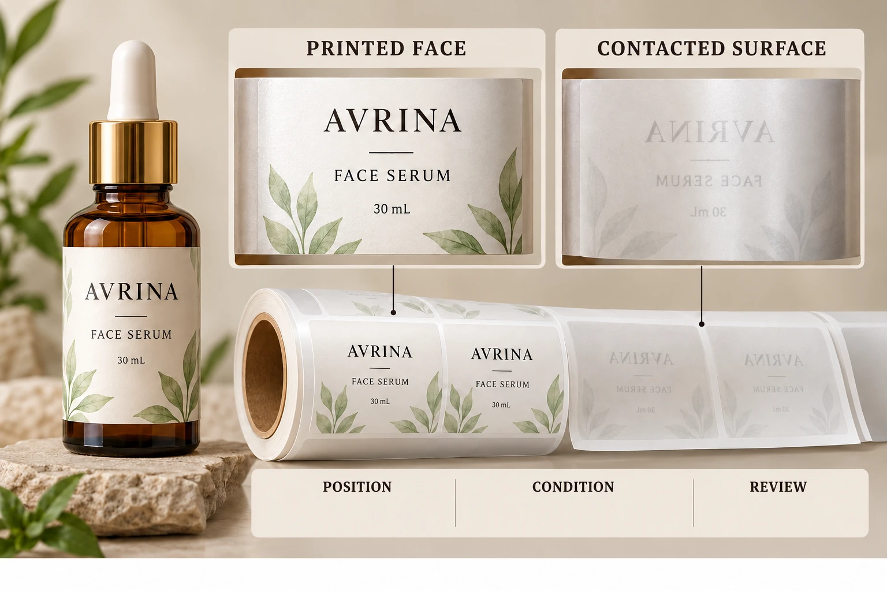

Identify the printed source and receiving surface
Record which surface carries the apparent source artwork and which carries the observed mark. In a converted wound supply, the contacted surface may be a backing exterior rather than the applied bottle. Have the converter confirm the actual arrangement instead of guessing from a simplified layer drawing.
Where a matching pattern is suspected, mark its location on both retained surfaces. Describe the observation without declaring that the match has been proven. Preserve enough surrounding material to connect the two positions and the roll reference.
Keep an unrelated handling smear separate. A mark introduced after someone touched or repacked the material is a different event from a contact feature already present when the roll was opened. If the stage is unknown, state the uncertainty.
Keep visible transfer separate from other technical conclusions
Terms such as set-off and blocking can be used differently in production conversations. Ask the converter to define the event it is investigating and which evidence would support its conclusion. Do not infer a curing failure, contamination or product-contact migration from the word alone.
The underlying investigation may require production information, retained samples or specialist analysis unavailable to the buyer. Request the next evidence step rather than adding a speculative cause to the purchase record. This article supplies no cure setting, drying time or laboratory method.
A mark on the backing also does not automatically establish the condition of the final applied bottle. Conversely, an acceptable bottle photo does not explain a supplied-roll contact observation. Keep the affected stage identifiable.
Preserve actual conditions and sample identity
Record job, artwork, complete construction and roll or carton. Include the known receipt, opening, storage and handling history. The storage guide provides a way to keep those events linked to physical material.
Retain the matched sections under the supplier's instructions. Do not wipe, scrape, heat or separate the only relevant feature repeatedly as an informal test. Such actions can remove evidence or create a different condition from the one reported.
If several sections or rolls are involved, identify each one and the scope of observation. A repeated pattern across traceable samples can inform the investigation, but it still does not prove a particular cause without the relevant technical review.
Use a paired-surface evidence table
This record is designed to make the next supplier conversation specific. It is not a defect allowance or a safety assessment.
| Record | Information to provide | Question supported |
|---|---|---|
| Supply identity | Construction, job, artwork and roll | Which manufactured supply is involved? |
| Source surface | Marked printed area and retained reference | What is suspected to have transferred? |
| Receiving surface | Actual contacted layer and location | Where is the observation present? |
| Relationship | Matched position record and converter confirmation | Does the proposed contact pair make sense? |
| Event history | Known opening and handling conditions | At which stage could the observation be reviewed? |
| Extent | Identified observations versus unreviewed stock | How broad is the available evidence? |
| Technical response | Requested examination, owner and disposition | What can be concluded and what happens next? |
First identify the material and both surfaces. Preserve the relationship in photographs and retained samples, collect the known conditions and send the record to the converter. Ask the receiving operation how the affected stock should be held or handled while review proceeds.
If the supplier proposes another construction or a corrected supply, ask what evidence addresses the reported contact event. A new print that looks clean immediately after manufacture is not, by itself, a complete answer about the intended wound and stored arrangement.

Different evidence can support different corrections
A hypothetical observation confined to a known handling event may lead to a focused process review. A separately identified repeated contact pattern in supplied rolls may require broader converter investigation. The next step should follow the actual record rather than an assumption that every mark has the same origin.
If the concern includes odor, product contact or a potential safety question, route it to the responsible quality and technical parties with the complete packaging context. Do not use a visible-transfer worksheet as proof that those separate questions are resolved.
The quality-issue evidence guide covers the wider order handoff. For cosmetic labels, prepare the job, paired-surface references, known extent and specific review request. Use the contact form to draft a message; send photos and records through email or WhatsApp. Preserve the pair until the supplier explains which evidence it needs next.